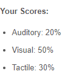

Team Profile
Team Name: TBA
Personal information
Name: Rui(Jerry) Chen
Student number: s3781948
Email: ahokingbaka@gmail.com
Nationality: Born in China but lived in Australia long enough to become an Australian citizen. Education to date: Year 12 graduate
Language: Chinese, English and Japanese. (None of these can be considered ‘fluent’ though.)
Interest: Anime, Games, Manga, Piano, Rubik’s cube and most importantly Being autistic.
Ideal job: Rich java programmer, but not the leader in the development group
Website for assignment 1: https://ahoking.github.io/
My name is Murray Owens. I was born in Melbourne, Australia in 2000 and have lived here all my life. I went to high school at Heathdale Christian College and am currently enrolled in a Bachelor of Computing Studies at RMIT. The courses I am doing are: Introduction to IT, Introduction to Programming, Introduction to Computer Systems and User-centred Design. My hobby is playing video games. I mostly play games from the 4x strategy genre, like Civilization V & VI and Paradox Interactive games. Student number: s3783779 Email: murray.owens@gmail.com
Website for assignment 1: https://murrayowens.github.io/
My name's Juancho , student number 's3776171' at s3776171@student.rmit.edu.au, and I moved here six years ago from the Philippines to continue my studies. A little known fact about me is that, though reluctant at first, I've been training and competing in Brazillian Jiu-Jitsu for the past 3 years. And in that time, I've won two gold medals and have gained my blue belt.
Website for assignment 1: https://juanchoaguirrre.github.io/Assignment-1-Juancho-s-Profile/Assignment1.html
My name is Marcus, I was born in Australia. I have went to East Doncaster Secondary College and enrolled in Bachelor of Information Technology. My hobbies are: watching anime, reading manga, sometimes reading light novels, playing games. The only language I know is English! ✧･ﾟ: *✧･ﾟ:*( ͡ᵔ ͜ʖ ͡ᵔ )*:･ﾟ✧*:･ﾟ✧ I also have a Certificate III in Information, Digital Media and Technology. My nationality is Australian, whereas my background is Malaysian Chinese. My student number is S3782955 and email is clearly: S3782955@student.rmit.edu.au.
Website for assignment 1: https://marcusgan.github.io/Assignment1/
Name: Jonathan Lombard
Student Number: s3787677
Email address: s3787677@student.rmit.edu.au
I was originally born in Sydney but moved to Melbourne at a very early age. I’ve spent most of my life overseas living in Australia, Singapore, and Germany. I have some prior experience in I.T as I did a similar course for a year at Swinburne, but didn’t really enjoy it, but beyond that I’m green like most people here. As for my interests, I have a passion for reading (In particular fantasy novels), Dungeons and Dragons, all sorts of games (with a strong preference for strategy games), and painting miniatures. I am greatly intrigued by I.T as a whole, but mostly in Cybersecurity and Machine learning.
Website for assignment 1: https://supershazbot99.github.io/
My name is Yu-Wei (Oscar) Shih
Student number: s3784820
Email: shifumana@gmail.com & s3784820@student.rmit.edu.au
I graduated from East Doncaster Secondary College, born in Taiwan, came here when i was 2 so im english first language. I got my interest in I.T after building my own gaming pc.
Hobbies: Games (plat in lol), listening to music (psytrance & hardstyle), youtube, game of thrones,
Website for assignment 1: https://occybokki.github.io/Assignment1_YuWeiShih/
Team Profile
- Juancho: After considering each of my team members test results, our group may need to give greater focus on our communication of ideas with one another. As the member with highest level of extraversion, I believe I would have to start the discussions and ensure team members are able to confidently speak about their ideas with the group. Being both a visual and auditory learner, I view that my research will mostly comprise of a combination of videos, articles, and even scholarly journals as well as podcasts and interviews to attain the most varied understanding of my team's project's studies.
- Jonathan: My test results are listed below. I believe my role as ‘the advocate’ will help balance the group, acting as a mediator for conflicting ideas. Furthermore, by being a visual learner I learn really well when it comes to educational videos and slideshows, which is how a lot of research is conducted these days. By sharing this information with the group I believe my fellow group members will be more able to understand my respective strengths and weaknesses.


- Murray: These are my results for the online tests. I am very introverted which may be of some detriment to group work, but I am also very conscientious and hard-working and will strive to complete all the tasks to the best of my ability.
|
Myers-Briggs:
ISFJ - T: “Defender”
Introverted - 99%
Observant - 55%
Feeling - 54%
Judging - 56%
Turbulent - 67
|
Learning Styles Test:
Visual - 55%
Tactile - 30%
Auditory - 15%
|
Big Five Test:
Extroversion - 1%
Emotional Stability - 26%
Agreeableness - 35%
Conscientiousness - 80%
Intellect/Imagination - 52%
|
- Marcus: These results could suggest that I am just an average person who observes and learns visually! This could influence the behaviour of my team, that I would observe and try to think if they are encountering any possible flaws that they have not thought of. Due to my Introvert is scaled highly (75%) I would consider small team, when it comes to forming teams.

- Yu-wei: With mixed results in both the Myers-Briggs test and learning style test, i believe i can adapt and cope with any problems that occur and am able to see things from different views.
- Jerry: This is my test result and to be honest I don’t believe in these so I won’t be affected by anything it said. It is true that I am extremely introverted so I believe I will just be following with what team gives me.
Ideal Jobs
Github Comments